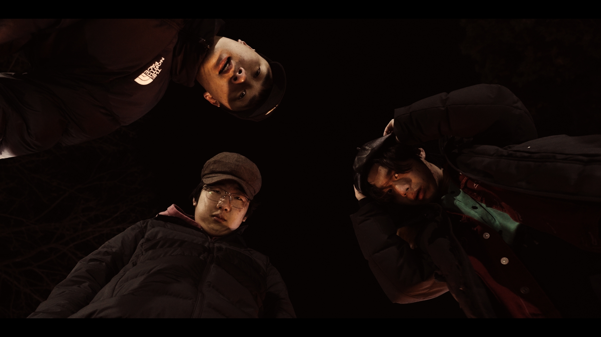
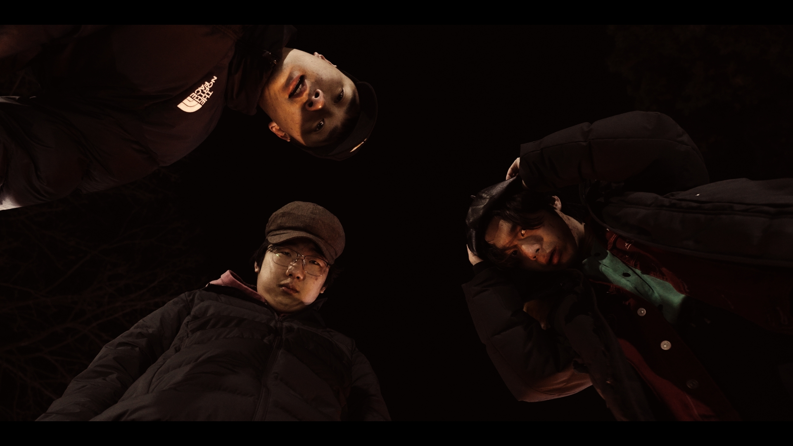
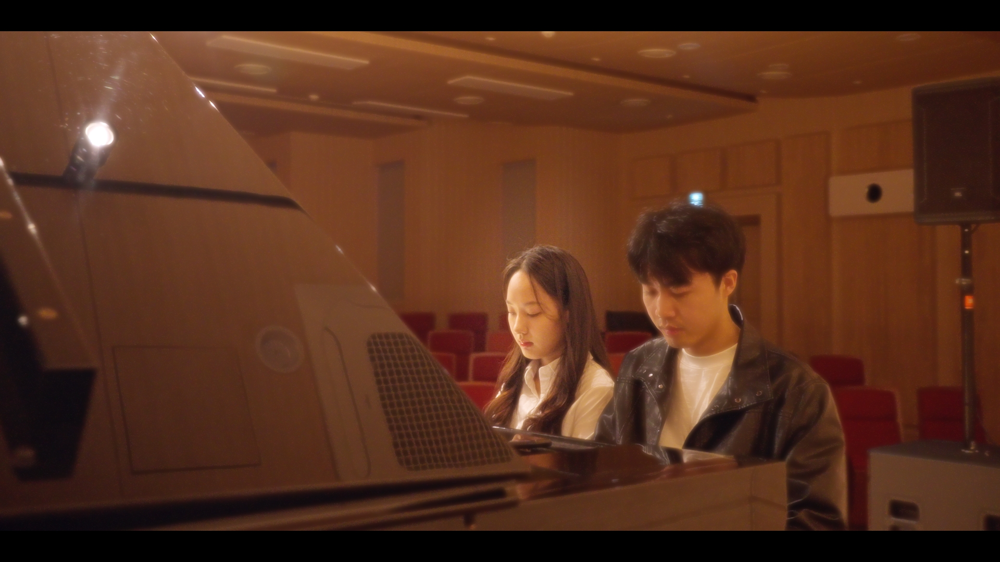
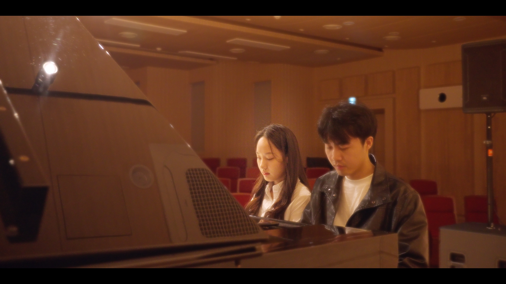

光痕叙事
摄影 · 朴恩在
PROFILE

摄影并非站在镜头之外的记录者。
它进入叙事，参与情绪，与演员一同完成表演。
FPS 24SHUTTER 180°EI 800
[LDS]
BAT 13.2V
00:57:29:08
 

 


CONTACT
Email · piaoenzai@gmail.com
Phone · 138-2526-7531
WeChat · eziortu
AVAILABLE FOR COLLABORATION